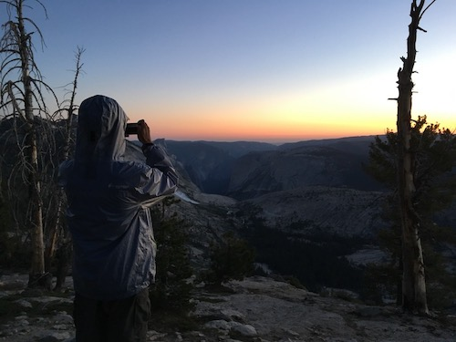
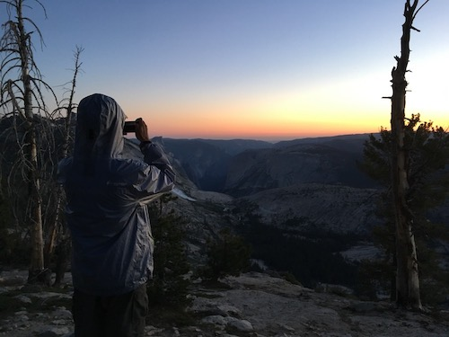

Backpacking in the Technological Era
Maximize the enjoyment, convenience, and safety of your hike with these free technologies.
In this forever evolving market for outdoor applications, I summarize and guide you through the most relevant software from my experiences out on trail. For each application recommended, from gear lists to smartphone GPS navigation, I provide an introduction and a fundamental guide to get started with screenshots and examples. I made sure that all the technologies are free, promoting the principle that just like technology, the outdoors should be accessible by all.
PDF Download
Free on Google Play
Memory Forensics Plugins for ML models
As part of my work at the CyFI lab, I develop Volatility plugins to recover ML models and detect signs of backdooring using techniques like feature squeezing.
Secret Sharing for Attorney-Client Data in a Multi-Provider Cloud Architecture
In this project, I designed my multi-provider cloud architecture based on the criteria of ensuring confidentiality, availability, and integrity of attorney documents. I further emphasized providing efficiency and usability to encourage future testing of my architecture in law firms.
My experimental results indicate the low computational overhead of adding the secret-sharing approach to a multi-cloud environment, even on consumer grade hardware. This will be essential for integrating law firms as active participants into our architecture. The only possible way of compromising this system is if multiple cloud providers collude, which is still unlikely given that the shares are additionally encrypted.
A Privacy-Preserving Contact Tracing Application
A few other engineering and medicine oriented students and I spent a few months working on an app that could track the rapid spread of COVID-19. While many governments, such as China and South Korea, have implemented functional contact tracing apps, they are notorious for their lack of privacy. Traditional solutions like decentralization or using Bluetooth are simply too complex or inadequate. Our solution mainly revolves around
the user sending the hash of coordinates and a semi-trusted database that will do the matching and identifying of at-risk users. Infected users can report their diagnoses, which are verified and updated on the database and heat map. Read the manuscript below for the details.
Client Source Code
Server Source Code
About Me

Hi, I am a high schooler at Lynbrook High School in San Jose, California! I created my website mainly to document my backpacking trips. As an ultralight backpacker, I spend countless hours researching gear options and cool trails around me. If you take a look at my gear (linked above), it is clear that I take many sacrifices in comfort to streamline my pack weight. For instance,
I do not bring a stove, but rather, I cold soak, using cold water to rehydrate my oats, couscous, and other calorie dense foods. I also ditched my tent for a flat tarp, so my trekking poles could serve multiple purposes. So far, I have section-hiked part of the JMT (with them boys Alden and Jeremy) and most of the more minor backpacking trails around me.
As an Eagle Scout, I take full advantage of our many outings to test out new gear, like my new Borah Gear tarp! I hope to thru-hike the PCT after graduation. However, I started to record some of my cybersecurity projects on my website to document my avid exploration of this exciting field. After an apprenticeship at the Department of Defense, I became intrigued by network security and the detection of APT attacks. From there, I branched off to applied cryptography and human-centered security (see my secret sharing and contact tracing projects).
Recently, I have become inreasingly fascinated with memory forensics and malware detection as I am working on detecting adversarial ML attacks at the CyFI Lab. Check out my work on GitHub!

 
